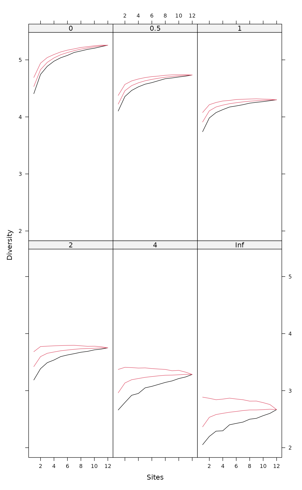

Renyi and Hill Diversities and Corresponding Accumulation Curves
renyi.RdFunction renyi find Rényi diversities with any
scale or the corresponding Hill number (Hill 1973). Function
renyiaccum finds these statistics with accumulating sites.
renyi(x, scales = c(0, 0.25, 0.5, 1, 2, 4, 8, 16, 32, 64, Inf), hill = FALSE) # S3 method for renyi plot(x, ...) renyiaccum(x, scales = c(0, 0.5, 1, 2, 4, Inf), permutations = 100, raw = FALSE, collector = FALSE, subset, ...) # S3 method for renyiaccum plot(x, what = c("Collector", "mean", "Qnt 0.025", "Qnt 0.975"), type = "l", ...) # S3 method for renyiaccum persp(x, theta = 220, col = heat.colors(100), zlim, ...)
Arguments
| x | Community data matrix or plotting object. |
|---|---|
| scales | Scales of Rényi diversity. |
| hill | Calculate Hill numbers. |
| permutations | Usually an integer giving the number
permutations, but can also be a list of control values for the
permutations as returned by the function |
| raw | if |
| collector | Accumulate the diversities in the order the sites are
in the data set, and the collector curve can be plotted against
summary of permutations. The argument is ignored if |
| subset | logical expression indicating sites (rows) to keep: missing
values are taken as |
| what | Items to be plotted. |
| type | Type of plot, where |
| theta | Angle defining the viewing direction (azimuthal) in
|
| col | Colours used for surface. Single colour will be passed on,
and vector colours will be
selected by the midpoint of a rectangle in |
| zlim | Limits of vertical axis. |
| ... | Other arguments which are passed to |
Details
Common diversity indices are special cases of
Rényi diversity
$$H_a = \frac{1}{1-a} \log \sum p_i^a$$
where \(a\) is a scale parameter, and Hill (1975) suggested to
use so-called ‘Hill numbers’ defined as \(N_a = \exp(H_a)\). Some Hill numbers are the number of species with
\(a = 0\), \(\exp(H')\) or the exponent of Shannon
diversity with \(a = 1\), inverse Simpson with \(a = 2\) and
\(1/ \max(p_i)\) with \(a = \infty\). According
to the theory of diversity ordering, one community can be regarded as
more diverse than another only if its Rényi diversities are all higher
(Tóthmérész 1995).
The plot method for renyi uses lattice graphics,
and displays the diversity values against each scale in separate panel
for each site together with minimum, maximum and median values in the
complete data.
Function renyiaccum is similar to specaccum but
finds Rényi or Hill diversities at given scales
for random permutations of accumulated sites. Its plot
function uses lattice function xyplot
to display the accumulation curves for each value of scales
in a separate panel. In addition, it has a persp method to
plot the diversity surface against scale and number and
sites. Similar dynamic graphics can be made with
rgl.renyiaccum in vegan3d package.
Value
Function renyi returns a data frame of selected
indices. Function renyiaccum with argument raw = FALSE
returns a three-dimensional array, where the first dimension are the
accumulated sites, second dimension are the diversity scales, and
third dimension are the summary statistics mean, stdev,
min, max, Qnt 0.025 and Qnt 0.975. With
argument raw = TRUE the statistics on the third dimension are
replaced with individual permutation results.
References
Hill, M.O. (1973). Diversity and evenness: a unifying notation and its consequences. Ecology 54, 427--473.
Kindt, R., Van Damme, P., Simons, A.J. (2006). Tree diversity in western Kenya: using profiles to characterise richness and evenness. Biodiversity and Conservation 15, 1253--1270.
Tóthmérész, B. (1995). Comparison of different methods for diversity ordering. Journal of Vegetation Science 6, 283--290.
See also
diversity for diversity indices, and
specaccum for ordinary species accumulation curves, and
xyplot, persp and
rgl.renyiaccum.
Examples
persp(mod)